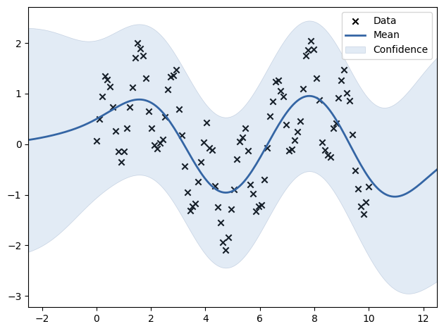

import numpy as np
import GPy
# Generate sample mixed-frequency data
X = np.linspace(0, 10, 100)[:, None]
Y_high_freq = np.sin(5 * X) # High-frequency component
Y_low_freq = np.sin(X) # Low-frequency component
Y = Y_high_freq + Y_low_freq + np.random.normal(0, 0.1, X.shape)
# Define a composite kernel: RBF for low-frequency, Periodic for high-frequency
kernel = GPy.kern.RBF(input_dim=1, variance=1.0, lengthscale=1.0) + \
GPy.kern.PeriodicExponential(input_dim=1, variance=1.0, lengthscale=1.0, period=1.0)
# Fit the GPR model
model = GPy.models.GPRegression(X, Y, kernel)
model.optimize(messages=True)
# Predict and visualize
X_pred = np.linspace(0, 10, 200)[:, None]
Y_pred, Y_var = model.predict(X_pred)
model.plot()
Y
array([[ 0.06256673],
[ 0.49897431],
[ 0.94044517],
[ 1.34511327],
[ 1.27149578],
[ 1.13330427],
[ 0.72801791],
[ 0.25866243],
[-0.14430431],
[-0.34863803],
[-0.14114719],
[ 0.31673057],
[ 0.73702612],
[ 1.12114356],
[ 1.71367958],
[ 1.99852868],
[ 1.88497042],
[ 1.74860016],
[ 1.30307753],
[ 0.65527779],
[ 0.3106254 ],
[-0.01670827],
[-0.08980786],
[ 0.02186938],
[ 0.08902238],
[ 0.54412629],
[ 1.07969283],
[ 1.33114324],
[ 1.35970477],
[ 1.46906883],
[ 0.69632259],
[ 0.17521089],
[-0.43345783],
[-0.94387609],
[-1.31439041],
[-1.22960213],
[-1.17132382],
[-0.74680784],
[-0.35458235],
[ 0.04193594],
[ 0.42513844],
[-0.06892396],
[-0.12037061],
[-0.82341435],
[-1.24053307],
[-1.54862438],
[-1.93756465],
[-2.09181082],
[-1.83955484],
[-1.27986815],
[-0.89692014],
[-0.29851458],
[ 0.0512817 ],
[ 0.13137313],
[ 0.3197196 ],
[-0.12530921],
[-0.79741854],
[-0.97436291],
[-1.32950654],
[-1.23161695],
[-1.19698082],
[-0.70384395],
[-0.07267315],
[ 0.55843442],
[ 0.84828461],
[ 1.23275431],
[ 1.26718628],
[ 1.05915986],
[ 0.94161615],
[ 0.38746369],
[-0.13205644],
[-0.09590993],
[ 0.07555061],
[ 0.25191052],
[ 0.4573478 ],
[ 1.09183214],
[ 1.74349099],
[ 1.85461703],
[ 2.03639227],
[ 1.87812713],
[ 1.30461088],
[ 0.87245552],
[ 0.04279681],
[-0.12080316],
[-0.21765914],
[-0.24977103],
[ 0.31504201],
[ 0.40880123],
[ 0.9124724 ],
[ 1.25767309],
[ 1.46697611],
[ 1.00568321],
[ 0.86030228],
[ 0.18543955],
[-0.51196818],
[-0.87930305],
[-1.2270019 ],
[-1.38136066],
[-1.14617504],
[-0.84492732]])
